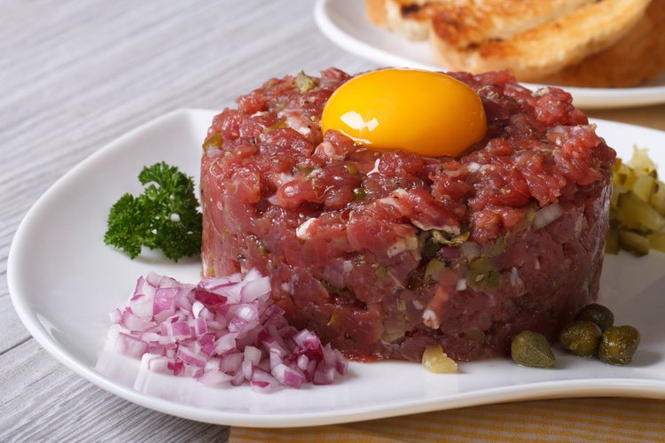

Descripción del Plato
El Tartar de Llama es un plato exótico y delicioso que destaca por su frescura y sabor. Este plato es una especialidad andina, preparado con carne de llama cruda finamente fileteada y marinada con especias autóctonas.
Ingredientes
- Carne de llama fresca
- Limón
- Sal
- Pimienta
- Hierbas andinas
- Aceite de oliva
Preparación
La preparación de Llama Cruda es simple pero requiere de ingredientes frescos y de alta calidad. La carne de llama se corta en finas láminas, se marina con jugo de limón, sal, pimienta y hierbas andinas, y se deja reposar por unos minutos antes de servir.